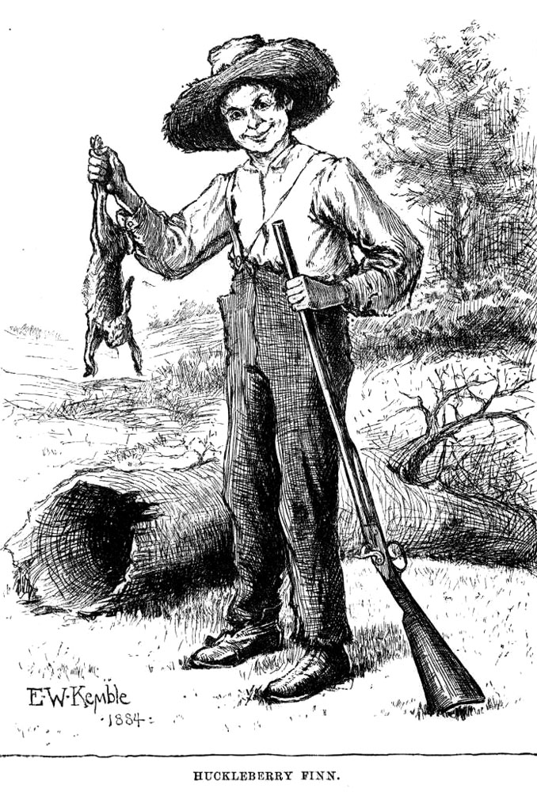
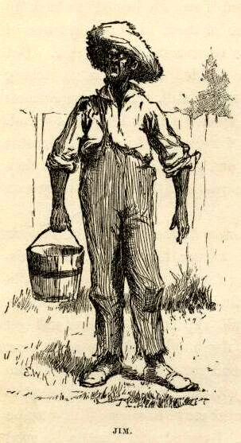
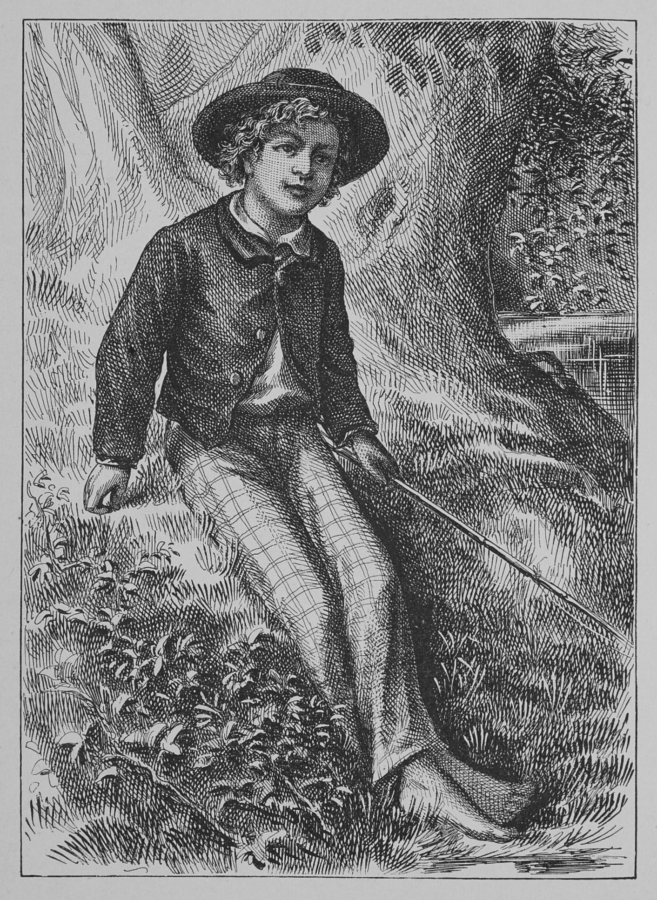
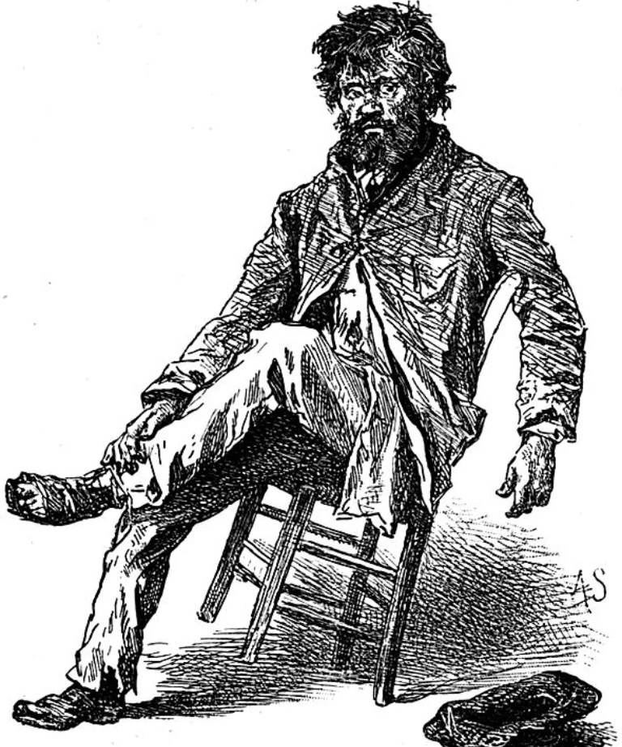
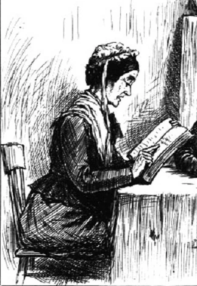
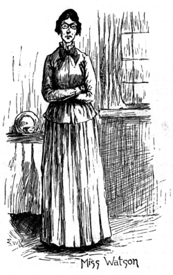

The Adventures of Huckleberry Finn, written by Mark Twain and published in 1884, follows the journey of Huck Finn as he travels along the Mississippi River with Jim, an escaped enslaved man. Through their adventures, the novel explores friendship, freedom, morality, and the social issues of nineteenth-century America.
The story takes place before the American Civil War, a period when slavery was still legal in the Southern United States. Mark Twain used Huck's journey to highlight the social inequalities, racial prejudice, and moral conflicts present during that era while portraying life along the Mississippi River.
Samuel Langhorne Clemens (Mark Twain) was born.
The Adventures of Huckleberry Finn was first published.
The novel remains one of the most influential works in American literature.

The adventurous young protagonist.

An escaped enslaved man seeking freedom.

Huck's imaginative and mischievous friend.

Huck's abusive father.

She attempts to raise Huck with proper manners.

The owner of Jim before his escape.